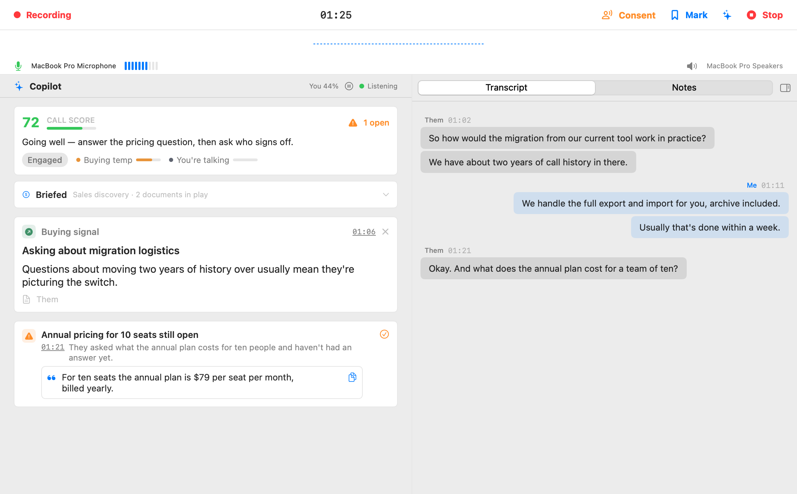

This is what Parrot looks like mid-call. Here's a tour of every region, top to bottom, and what's worth keeping an eye on.

Recording and the timer on the left, the Stop button on the right. The dotted waveform under it is the last minute of audio activity, a quick "yes, sound is arriving" check.
Your current microphone with a live level meter, and the output device on the right. Two things to watch here:
Everything the AI thinks about your call, glanceable:
Below the score, cards arrive as the conversation gives the Copilot something to say. The one to never miss: cards with the orange warning icon are blockers, and they stay pinned at the top until you tick them handled. The "1 open" counter next to the score tells you how many are waiting. Regular cards stack below; every card shows its time in the call (click it to jump the transcript there), and suggested answers come with a copy button so you can paste the line into chat if saying it feels weird. Dismiss anything wrong with the ×, it trains nothing and hurts nothing.
The Transcript tab is the live conversation, you on the right in blue, everyone else on the left, with a light preview bubble while someone is mid-sentence. It follows the newest line on its own; scroll up to re-read something and it politely stops following until you scroll back down.
The Notes tab is a plain text pad for the thoughts the AI can't have for you. Notes are saved with the meeting and come along when you export it.
The small icon next to the tabs collapses the whole right side if you want the Copilot full-width, and the sparkle icon in the very top bar hides the Copilot instead if you only want the transcript.